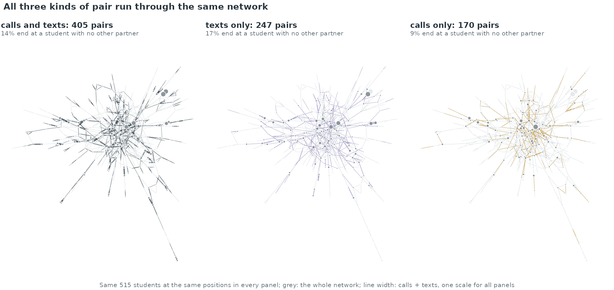
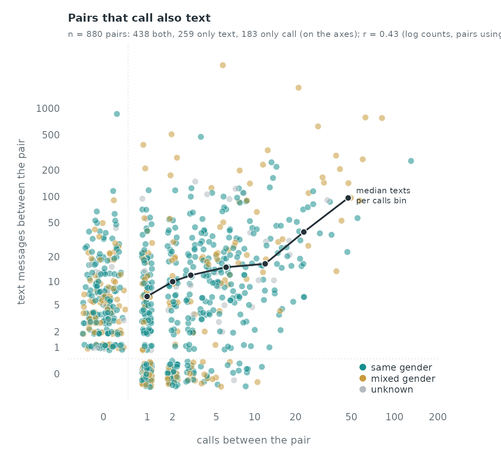
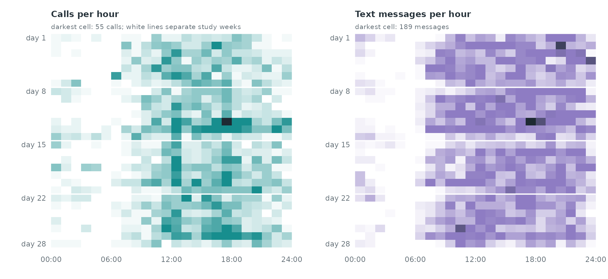
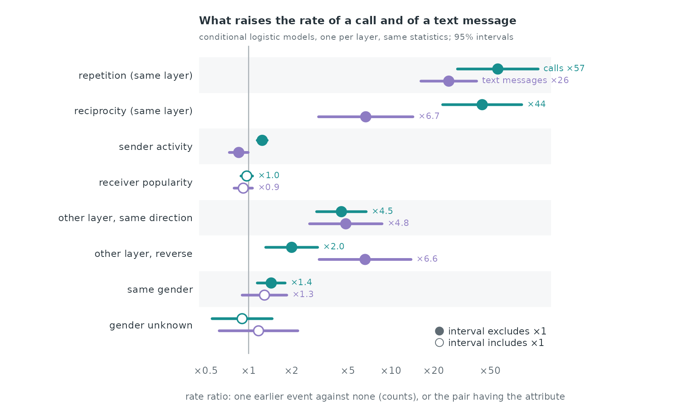
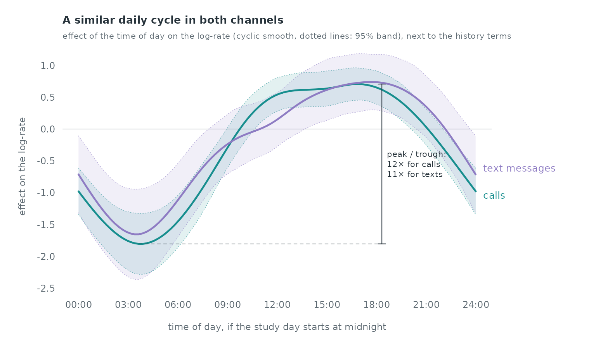

Case study: calls and text messages in the Copenhagen Networks Study
Source:vignettes/articles/case-copenhagen.Rmd
case-copenhagen.RmdCalls and text messages in the Copenhagen Networks Study
The Copenhagen Networks Study gave smartphones to about 700
first-year university students in Copenhagen and recorded, among other
channels, their phone calls and text messages over four weeks
(Sapiezynski et al. 2019). copenhagen_calls and
copenhagen_sms are two relational event logs on the same
students, and copenhagen_actors records each student’s
gender. The two logs are two layers of one multiplex network: the same
pair can call, text, or both. This case study asks whether a pair’s
history in one layer changes its rate in the other, how reciprocity and
repetition act within each layer, whether students call and text within
their own gender more than by chance, and how both layers follow the
clock.
The two layers
data(copenhagen_calls); data(copenhagen_sms); data(copenhagen_actors)
calls <- copenhagen_calls[, c("sender", "receiver", "time", "duration")]
sms <- copenhagen_sms[, c("sender", "receiver", "time")]
fem <- setNames(copenhagen_actors$female, copenhagen_actors$id)
pair <- function(d) paste(pmin(d$sender, d$receiver), pmax(d$sender, d$receiver))
pc <- table(pair(calls)); ps <- table(pair(sms))
both <- intersect(names(pc), names(ps))
data.frame(layer = c("calls", "text messages"),
events = c(nrow(calls), nrow(sms)),
students = c(length(unique(c(calls$sender, calls$receiver))),
length(unique(c(sms$sender, sms$receiver)))),
pairs = c(length(pc), length(ps)),
pairs_in_both_layers = length(both))
#> layer events students pairs pairs_in_both_layers
#> 1 calls 3600 536 621 438
#> 2 text messages 24333 568 697 438438 pairs appear in both layers. They carry 88.9% of all calls and
86.0% of all text messages, so most communication runs through pairs
that use both channels. A call is recorded whether or not it was
answered (10.2% have duration -1, the release’s code for a
missed call); every call attempt is an event here. Gender is recorded
for 95.7% of the students who appear in either log.
# one layout for both layers: the union of the two networks, largest component
u <- rbind(data.frame(from = calls$sender, to = calls$receiver),
data.frame(from = sms$sender, to = sms$receiver))
u <- aggregate(list(w = rep(1, nrow(u))), u, sum)
g <- igraph::graph_from_data_frame(u[, 1:2], directed = FALSE)
comp <- igraph::components(g)
giant <- names(comp$membership)[comp$membership == which.max(comp$csize)]
lay <- layout_graph(u[u$from %in% giant & u$to %in% giant, ], ids = giant, seed = 3)
gcol <- c(female = pal[5], male = pal[4], unknown = "#B4BBC0")
g_of <- function(id) ifelse(is.na(fem[id]), "unknown", ifelse(fem[id] == 1, "female", "male"))
lcol <- c("calls and texts" = ink, "texts only" = pal[2], "calls only" = pal[6])
e <- data.frame(pair = union(names(pc), names(ps)))
e$calls <- as.numeric(pc[e$pair]); e$texts <- as.numeric(ps[e$pair])
e$calls[is.na(e$calls)] <- 0; e$texts[is.na(e$texts)] <- 0
ab <- do.call(rbind, strsplit(e$pair, " ")); e$from <- ab[, 1]; e$to <- ab[, 2]
e <- e[e$from %in% lay$id & e$to %in% lay$id, ]
e$layer <- ifelse(e$calls > 0 & e$texts > 0, "calls and texts", ifelse(e$texts > 0, "texts only", "calls only"))
e$w <- pmax(e$calls + e$texts, 4); e$col <- lcol[e$layer] # pairs with 4 or fewer events share the thinnest visible line
act <- table(c(calls$sender, calls$receiver, sms$sender, sms$receiver))
nodes <- data.frame(id = lay$id, x = lay$x, y = lay$y, size = as.numeric(act[lay$id]),
col = gcol[g_of(lay$id)])
# a pair is "peripheral" when one of its students has no other partner in either layer
deg <- table(c(e$from, e$to))
e$leaf <- deg[e$from] == 1 | deg[e$to] == 1
nodes$col <- "#8C969D"
op <- par(mfrow = c(1, 3), mar = c(0.1, 0.1, 3.2, 0.1), oma = c(0, 0, 2, 0))
for (L in names(lcol)) {
k <- e$layer == L
# draw_network scales widths to the panel's largest pair; rescale so all panels share one scale
ml <- 3.4 * (log1p(max(e$w[k])) / log1p(max(e$w)))^1.4
bg <- e[, c("from", "to")]; bg$w <- 1; bg$col <- "#DCE0E3" # the whole network, faint, behind each panel
draw_network(transform(nodes, col = "#E6E9EB"), bg, directed = FALSE, max_lwd = 0.4,
node_scale = c(0.35, 1.8), xlim = c(-0.02, 1.02), ylim = c(-0.02, max(nodes$y) + 0.02))
draw_network(nodes[nodes$id %in% c(e$from[k], e$to[k]), ], e[k, c("from", "to", "w", "col")],
directed = FALSE, max_lwd = ml, node_scale = c(0.35, 1.8), add = TRUE)
title_left(sprintf("%s: %s pairs", L, fmt(sum(k))),
sprintf("%s end at a student with no other partner", pct(mean(e$leaf[k]), 0)))
}
mtext("All three kinds of pair run through the same network", side = 3, outer = TRUE, line = 0.5, adj = 0.01, cex = 0.95, font = 2, col = ink)
mtext(sprintf("Same %s students at the same positions in every panel; grey: the whole network; line width: calls + texts, one scale for all panels",
fmt(length(giant))), side = 1, outer = TRUE, line = -1.2, cex = 0.68, col = ink_soft)
par(op)
nl <- table(factor(e$layer, levels = names(lcol)))
leaf_share <- tapply(e$leaf, factor(e$layer, levels = names(lcol)), mean)The figure draws the 515 students of the largest connected group of the two layers together (out of 608) at the same positions in three panels: pairs that both call and text, pairs that only text, and pairs that only call. Line width is calls plus texts (pairs with four or fewer events are drawn alike) and dot size the student’s events. The 405 two-channel pairs span the whole network; 14% of them end at a student with no other partner, against 17% of the text-only and 9% of the call-only pairs.
pairs <- union(names(pc), names(ps))
n_call <- as.numeric(pc[pairs]); n_call[is.na(n_call)] <- 0
n_sms <- as.numeric(ps[pairs]); n_sms[is.na(n_sms)] <- 0
ends <- do.call(rbind, strsplit(pairs, " "))
comp_g <- ifelse(is.na(fem[ends[, 1]]) | is.na(fem[ends[, 2]]), "unknown",
ifelse(fem[ends[, 1]] == fem[ends[, 2]], "same gender", "mixed gender"))
ccol <- c("same gender" = pal[1], "mixed gender" = pal[6], unknown = "#B4BBC0")
set.seed(4)
jit <- function(n) runif(length(n), -0.12, 0.12)
# every integer column and row gets the same small jitter
x <- log10(n_call + 1) + runif(length(n_call), -0.035, 0.035) + ifelse(n_call == 0, jit(n_call), 0)
y <- log10(n_sms + 1) + runif(length(n_sms), -0.035, 0.035) + ifelse(n_sms == 0, jit(n_sms), 0)
par(mar = c(4, 4.4, 2.8, 4))
plot(x, y, pch = 21, bg = alpha(ccol[comp_g], 0.55), col = "white", cex = 1.1, lwd = 0.4,
axes = FALSE, xlab = "", ylab = "", xlim = c(-0.15, max(x) + 0.1), ylim = c(-0.15, max(y) + 0.1))
at <- c(0, 1, 2, 5, 10, 20, 50, 100, 200, 500, 1000)
axis(1, at = log10(at + 1), labels = at, tick = FALSE, cex.axis = 0.75, col.axis = ink_soft, line = -0.5)
axis(2, at = log10(at + 1), labels = at, las = 1, tick = FALSE, cex.axis = 0.75, col.axis = ink_soft, line = -0.5)
mtext("calls between the pair", side = 1, line = 2, cex = 0.8, col = ink_soft)
mtext("text messages between the pair", side = 2, line = 2.6, cex = 0.8, col = ink_soft)
abline(h = 0.17, v = 0.17, col = rule, lty = 3)
r_both <- cor(log1p(n_call[n_call > 0 & n_sms > 0]), log1p(n_sms[n_call > 0 & n_sms > 0]))
# median texts per bin of calls, pairs using both channels
bb <- n_call > 0 & n_sms > 0; br <- c(1, 2, 3, 5, 9, 17, 33, 200)
bin <- cut(n_call[bb], br, right = FALSE)
med <- tapply(log10(n_sms[bb] + 1), bin, median); mx <- tapply(log10(n_call[bb] + 1), bin, median)
lines(mx, med, col = ink, lwd = 2.2); points(mx, med, pch = 21, bg = ink, col = "white", cex = 1.1)
text(mx[length(mx)], med[length(med)], "median texts\nper calls bin", pos = 4, cex = 0.65, col = ink, xpd = TRUE)
title_left("Pairs that call also text",
sprintf("n = %s pairs: %s both, %s only text, %s only call (on the axes); r = %.2f (log counts, pairs using both)",
fmt(length(pairs)), fmt(sum(n_call > 0 & n_sms > 0)), fmt(sum(n_sms > 0 & n_call == 0)), fmt(sum(n_call > 0 & n_sms == 0)), r_both))
legend("bottomright", legend = names(ccol), pt.bg = ccol, col = "white", pch = 21, pt.cex = 1.3,
bty = "n", cex = 0.72, text.col = ink)
Of the 880 pairs, 438 use both channels, 259 only text and 183 only call. Where a pair uses both, its call and text counts rise together (correlation of the log counts 0.43). Among pairs with known genders, 36.6% of the text-only pairs are mixed-gender, against 27.2% of the pairs that call.
Clock time
time counts days from the start of the four-week period;
the release gives no calendar date. If the period starts at midnight,
time %% 1 is the time of day. Both layers fall to their
lowest level between 03:00 and 06:00 and peak in the afternoon and
evening, which is what a midnight start implies, but the release does
not state the start, so the clock times below assume one. The weekday of
day 1 is not known either, so the weekly cycle is indexed by the day of
the study week (1 to 7), not by weekday names.
heat_day_hour <- function(t) {
m <- table(factor(floor(t), levels = 0:27), factor(floor((t %% 1) * 24), levels = 0:23))
matrix(as.numeric(m), 28, 24)
}
hc <- heat_day_hour(calls$time); hs <- heat_day_hour(sms$time)
draw_heat <- function(m, col, main, sub) {
ramp <- grDevices::colorRampPalette(c("#FFFFFF", alpha(col, 0.35), col, "#1E2A33"))(64)
image(0:23 + 0.5, 1:28, t(m), col = ramp, axes = FALSE, xlab = "", ylab = "", useRaster = TRUE,
xlim = c(0, 24), ylim = c(28.5, 0.5))
abline(h = seq(7.5, 21.5, 7), col = "white", lwd = 2)
axis(1, at = seq(0, 24, 6), labels = sprintf("%02d:00", seq(0, 24, 6)), tick = FALSE,
cex.axis = 0.72, col.axis = ink_soft, line = -0.6)
axis(2, at = c(1, 8, 15, 22, 28), labels = paste("day", c(1, 8, 15, 22, 28)), las = 1, tick = FALSE,
cex.axis = 0.72, col.axis = ink_soft, line = -0.6)
title_left(main, sub)
}
op <- par(mfrow = c(1, 2), mar = c(2.6, 4.2, 2.8, 1))
draw_heat(hc, pal[1], "Calls per hour", sprintf("darkest cell: %d calls; white lines separate study weeks", max(hc)))
draw_heat(hs, pal[2], "Text messages per hour", sprintf("darkest cell: %d messages", max(hs)))
par(op)Between 02:00 and 07:00 fall 2.9% of the calls and 1.4% of the text messages. Daily totals of the two layers have correlation 0.47 over the 28 days.
The animation steps through the 56 half-day windows on one layout of the 120 most active students. The windows from 12:00 to 24:00 hold 73% of all calls and texts; the busiest window, day 12, 12:00-24:00, has 1,274 events, and the quietest of the afternoon-evening windows has 378.
A case-control design per layer
Each layer gets its own case-control sample: five non-events per
event, dyads drawn uniformly among the students of that layer
(sample_non_events() with scope = "all",
mode = "one"). All 3,600 calls are cases. For the text
messages, 3,600 of the 24,333 messages are drawn at random (seed 1) as
cases, which keeps the page’s build time short; every statistic is still
computed from the full history of both logs, so only the number of
strata changes, not what each stratum compares.
set.seed(1)
sms_cases <- sms[sort(sample(nrow(sms), nrow(calls))), ]
cc_call <- sample_non_events(calls[, c("sender", "receiver", "time")], n_controls = 5, seed = 1)
cc_sms <- sample_non_events(sms_cases, n_controls = 5, seed = 1)
c(call_rows = nrow(cc_call), sms_rows = nrow(cc_sms))
#> call_rows sms_rows
#> 21600 21600Statistics
For a row with sender , receiver at time , all counts use events strictly before :
- repetition: past events in the same layer;
-
reciprocity: past events
in the same layer (
reciprocity_count); -
sender activity and receiver
popularity: the sender’s past outgoing and the receiver’s past
incoming events in the same layer (
sender_outdegree,receiver_indegree); - other layer, same direction and other layer, reverse: past events and in the other layer;
- same gender: both students have a recorded gender and it is the same; gender unknown: at least one gender is missing (the reference is a pair of known, different genders).
endogenous_features() computes the within-layer
statistics against the full log of the layer (history_log).
Repetition and the cross-layer counts are counts of a pair’s past events
in a given log, built here with one sort:
# number of events of pair (s -> r) in `log` strictly before each query time
past_count <- function(s, r, t, log) {
q <- data.frame(k = paste(s, r), t = t, is_log = 0L, id = seq_along(t))
l <- data.frame(k = paste(log$sender, log$receiver), t = log$time, is_log = 1L, id = NA)
a <- rbind(q, l)
a <- a[order(a$k, a$t, a$is_log), ] # at equal times the query comes first
before <- ave(a$is_log, a$k, FUN = cumsum)
out <- integer(length(t)); out[a$id[a$is_log == 0L]] <- before[a$is_log == 0L]
out
}
add_stats <- function(cc, own, other) {
cc <- endogenous_features(cc, stats = c("reciprocity_count", "sender_outdegree",
"receiver_indegree"), history_log = own)
cc$repetition <- past_count(cc$sender, cc$receiver, cc$time, own)
cc$cross_same <- past_count(cc$sender, cc$receiver, cc$time, other)
cc$cross_rev <- past_count(cc$receiver, cc$sender, cc$time, other)
for (v in c("repetition", "reciprocity_count", "sender_outdegree", "receiver_indegree",
"cross_same", "cross_rev")) {
x <- cc[[v]]; x[is.na(x)] <- 0; cc[[paste0("l_", v)]] <- log1p(x)
}
gs <- fem[cc$sender]; gr <- fem[cc$receiver]
cc$gender_unknown <- as.integer(is.na(gs) | is.na(gr))
cc$same_gender <- as.integer(!is.na(gs) & !is.na(gr) & gs == gr)
cc
}
cc_call <- add_stats(cc_call, own = calls, other = sms)
cc_sms <- add_stats(cc_sms, own = sms, other = calls)
round(rbind(
calls = tapply(cc_call$cross_same > 0, cc_call$event, mean),
texts = tapply(cc_sms$cross_same > 0, cc_sms$event, mean)), 3) # share with past contact in the other layer: controls (0), events (1)
#> 0 1
#> calls 0.003 0.761
#> texts 0.002 0.58376.1% of calls go from a student who had already texted the callee, against 0.29% of the sampled non-events; 58.3% of the sampled text messages follow an earlier call in the same direction, against 0.21% of their non-events.
Conditional logistic models
The same specification is fitted to each layer with
rem(method = "clogit").
f <- event ~ l_repetition + l_reciprocity_count + l_sender_outdegree +
l_receiver_indegree + l_cross_same + l_cross_rev + same_gender + gender_unknown
fit_call <- rem(f, data = cc_call, method = "clogit", stratum = "stratum")
fit_sms <- rem(f, data = cc_sms, method = "clogit", stratum = "stratum")
tab <- function(fit) { s <- summary(fit)$coefficients; s[, c("coef", "se(coef)")] }
round(cbind(calls = tab(fit_call), texts = tab(fit_sms)), 3)
#> coef se(coef) coef se(coef)
#> l_repetition 5.822 0.481 4.677 0.332
#> l_reciprocity_count 5.457 0.471 2.737 0.563
#> l_sender_outdegree 0.317 0.060 -0.230 0.112
#> l_receiver_indegree -0.044 0.069 -0.125 0.109
#> l_cross_same 2.168 0.296 2.271 0.432
#> l_cross_rev 1.006 0.310 2.721 0.548
#> same_gender 0.366 0.115 0.257 0.184
#> gender_unknown -0.105 0.248 0.160 0.325
labels <- c(l_repetition = "repetition (same layer)", l_reciprocity_count = "reciprocity (same layer)",
l_sender_outdegree = "sender activity", l_receiver_indegree = "receiver popularity",
l_cross_same = "other layer, same direction", l_cross_rev = "other layer, reverse",
same_gender = "same gender", gender_unknown = "gender unknown")
forest2 <- function(fits, cols, labels) {
# count terms enter as log(1 + count): one earlier event against none is a step of log(2)
step <- ifelse(grepl("^l_", names(labels)), log(2), 1)
b <- sapply(fits, function(f) tab(f)[names(labels), 1]) * step
s <- sapply(fits, function(f) tab(f)[names(labels), 2]) * step
k <- nrow(b); y <- k:1; off <- c(0.17, -0.17)
lo <- b - 1.96 * s; hi <- b + 1.96 * s
par(mar = c(3.8, 13, 3, 9))
plot(NA, xlim = range(lo, hi, 0), ylim = c(0.5, k + 0.5), axes = FALSE, xlab = "", ylab = "")
rect(par("usr")[1], y[c(TRUE, FALSE)] - 0.5, par("usr")[2], y[c(TRUE, FALSE)] + 0.5, col = "#F6F7F8", border = NA)
abline(v = 0, col = rule, lwd = 1.4)
abline(v = 0, col = "#AEB5BA", lwd = 1.4)
for (m in seq_along(fits)) {
clear <- lo[, m] > 0 | hi[, m] < 0 # interval excludes x1
segments(lo[, m], y + off[m], hi[, m], y + off[m], col = cols[m], lwd = 3.4)
points(b[, m], y + off[m], pch = 21, bg = ifelse(clear, cols[m], "white"), col = cols[m], cex = 1.7, lwd = 1.8)
big <- which(b[, m] >= log(2))
lab <- paste0("\u00d7", ifelse(exp(b[, m]) >= 10, sprintf("%.0f", exp(b[, m])), sprintf("%.1f", exp(b[, m]))))
lab[1] <- paste(names(fits)[m], lab[1])
show <- union(union(1, big), match(c("receiver popularity", "same gender"), labels))
text(hi[show, m], y[show] + off[m], lab[show], pos = 4, cex = 0.7, col = cols[m], offset = 0.35, xpd = TRUE)
}
fac <- c(0.5, 1, 2, 5, 10, 20, 50); fac <- fac[log(fac) >= par("usr")[1] & log(fac) <= par("usr")[2]]
axis(1, at = log(fac), labels = paste0("\u00d7", fac), tick = FALSE, cex.axis = 0.78, col.axis = ink_soft, line = -0.5)
axis(2, at = y, labels = labels, las = 1, tick = FALSE, cex.axis = 0.78, col.axis = ink, line = -0.6)
mtext("rate ratio: one earlier event against none (counts), or the pair having the attribute",
side = 1, line = 2.2, cex = 0.72, col = ink_soft)
legend("bottomright", legend = c("interval excludes \u00d71", "interval includes \u00d71"), pch = 21,
pt.bg = c(ink_soft, "white"), col = ink_soft, pt.cex = 1.4, bty = "n", cex = 0.75, text.col = ink)
}
forest2(list(calls = fit_call, `text messages` = fit_sms), pal[1:2], labels)
title_left("What raises the rate of a call and of a text message",
"conditional logistic models, one per layer, same statistics; 95% intervals")
Each count enters as , so a coefficient means that one earlier event against none, and every further doubling of , multiplies the rate by . Every effect is conditional on the others in the same model.
- History in the other layer. One earlier text multiplies the rate of a call by 4.5 (95% interval 3.01 to 6.71) once the pair’s call history is known; one earlier text by 2.0 (1.32 to 3.06). For text messages, one earlier call in the same direction multiplies the rate by 4.8 (2.68 to 8.68) and one in the reverse direction by 6.6 (3.13 to 13.88).
- Within the layer. One earlier event in the same direction multiplies the call rate by 57 and the text rate by 26; one earlier event in the reverse direction by 44 and 6.7. Against controls drawn uniformly from all pairs, almost none of which has any history, these are the largest effects in both models.
- Gender. A same-gender pair has 1.44 times the call rate of a mixed-gender pair with the same history (1.15 to 1.81); for text messages the factor is 1.29 (0.90 to 1.85), an interval that includes 1.
Among the events, the log count of the pair’s past events in its own layer and in the other layer have correlation 0.66 for calls and 0.40 for text messages, so the cross-layer coefficients measure what the other layer adds once the pair’s history in the layer is known.
The daily cycle as a global covariate
Hour of day and day of the study week take the same value for every
pair at a given instant, so ordinary case-control sampling cannot
estimate them (the event and its controls share the event’s time).
Time-shifted sampling (shift = "exponential",
window = c(0, 28)) gives each control its own time; the
hour and the day of the study week then enter as cyclic smooths in
rem(method = "gam"), next to the within-layer and
cross-layer counts (evaluated at each row’s own time).
shifted <- function(log, own, other, seed) {
cc <- sample_non_events(log, n_controls = 1, seed = seed, shift = "exponential", window = c(0, 28))
cc <- add_stats(cc, own, other)
cc$hour <- (cc$time %% 1) * 24
cc$wday <- cc$time %% 7
widen_case_control(cc, covariates = c("hour", "wday", "l_repetition", "l_reciprocity_count",
"l_cross_same", "same_gender", "gender_unknown"))
}
w_call <- shifted(calls[, c("sender", "receiver", "time")], calls, sms, seed = 2)
w_sms <- shifted(sms_cases, sms, calls, seed = 2)
fg <- ~ nl(hour, bs = "cc", k = 12) + nl(wday, bs = "cc", k = 6) + l_repetition +
l_reciprocity_count + l_cross_same + same_gender + gender_unknown
g_call <- rem(fg, data = w_call, method = "gam")
g_sms <- rem(fg, data = w_sms, method = "gam")
rbind(calls = summary(g_call)$s.table[, "p-value"], texts = summary(g_sms)$s.table[, "p-value"])
#> s(.X_hour):.I s(.X_wday):.I
#> calls 0.000000e+00 0.4335294
#> texts 4.169478e-06 0.9026032
dh_c <- smooth_data(g_call$fit, 1); dh_s <- smooth_data(g_sms$fit, 1)
yl <- range(dh_c$fit - 1.96 * dh_c$se, dh_c$fit + 1.96 * dh_c$se, dh_s$fit - 1.96 * dh_s$se, dh_s$fit + 1.96 * dh_s$se)
par(mar = c(3.6, 4.2, 3, 7))
band <- function(d, col) {
lo <- d$fit - 1.96 * d$se; hi <- d$fit + 1.96 * d$se
polygon(c(d$x, rev(d$x)), c(lo, rev(hi)), col = alpha(col, 0.12), border = NA)
lines(d$x, lo, col = alpha(col, 0.6), lwd = 0.8, lty = 3); lines(d$x, hi, col = alpha(col, 0.6), lwd = 0.8, lty = 3)
}
plot(dh_c$x, dh_c$fit, type = "n", ylim = yl, axes = FALSE, xlab = "", ylab = "", xlim = c(0, 24))
abline(h = 0, col = rule, lwd = 1.2)
band(dh_c, pal[1]); band(dh_s, pal[2])
lines(dh_c$x, dh_c$fit, col = pal[1], lwd = 2.4); lines(dh_s$x, dh_s$fit, col = pal[2], lwd = 2.4)
axis(1, at = seq(0, 24, 3), labels = sprintf("%02d:00", seq(0, 24, 3)), tick = FALSE, cex.axis = 0.75, col.axis = ink_soft, line = -0.5)
axis(2, las = 1, tick = FALSE, cex.axis = 0.75, col.axis = ink_soft, line = -0.5)
mtext("time of day, if the study day starts at midnight", side = 1, line = 2, cex = 0.75, col = ink_soft)
mtext("effect on the log-rate", side = 2, line = 2.3, cex = 0.75, col = ink_soft)
n <- nrow(dh_c)
text(24, dh_c$fit[n] - 0.08, "calls", pos = 4, col = pal[1], cex = 0.8, xpd = TRUE)
text(24, dh_s$fit[n] + 0.08, "text messages", pos = 4, col = pal[2], cex = 0.8, xpd = TRUE)
# trough-to-peak bracket for calls
xt <- dh_c$x[which.min(dh_c$fit)]; xp <- dh_c$x[which.max(dh_c$fit)]
arrows(xp + 1.6, min(dh_c$fit), xp + 1.6, max(dh_c$fit), code = 3, length = 0.05, angle = 90, col = ink, lwd = 1)
segments(xt, min(dh_c$fit), xp + 1.6, min(dh_c$fit), col = alpha(ink, 0.35), lty = 2)
text(xp + 1.9, mean(range(dh_c$fit)), sprintf("peak / trough:\n%s\u00d7 for calls\n%s\u00d7 for texts", fmt(exp(diff(range(dh_c$fit))), 0), fmt(exp(diff(range(dh_s$fit))), 0)),
adj = 0, cex = 0.68, col = ink, xpd = TRUE)
title_left("A similar daily cycle in both channels",
"effect of the time of day on the log-rate (cyclic smooth, dotted lines: 95% band), next to the history terms")
On the log-rate scale the hour-of-day effect spans 2.5 for calls and 2.4 for text messages: a factor of 12 and 11 between the quietest hour (around 4:00 for calls, 3:00 for texts) and the busiest (around 17:00 and 18:00). The two curves have a similar shape; their 95% bands overlap at every hour, and the call curve lies above the text curve around midday. The day of the study week adds no effect that the data separate from zero (p = 0.434 for calls, p = 0.903 for text messages): its smooth is shrunk to a flat line in both models.
What the data cannot say
- The release gives elapsed time only. Hour of day assumes a midnight start, and the weekly cycle has no weekday names.
- Calls include missed calls; a model of answered calls only would
drop the 10.2% with duration
-1. - The text-message model uses 3,600 of the 24,333 messages as cases (fixed seed); its standard errors are larger than a model on all messages would give.
- Phones record only communication between participants; calls and texts to people outside the study are not in the logs.
Reference
Sapiezynski P, Stopczynski A, Lassen DD, Lehmann S (2019). Interaction data from the Copenhagen Networks Study. Scientific Data 6, 315. doi:10.1038/s41597-019-0325-x.